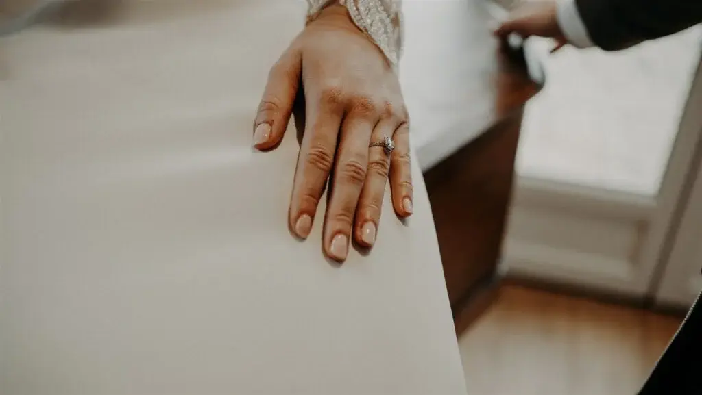
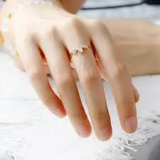
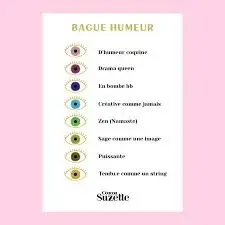
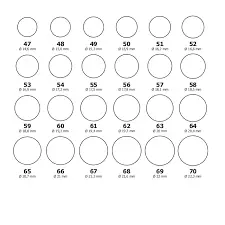
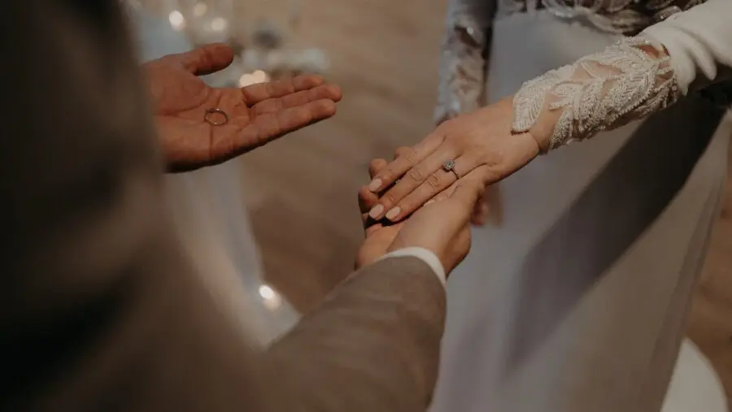
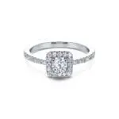
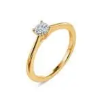
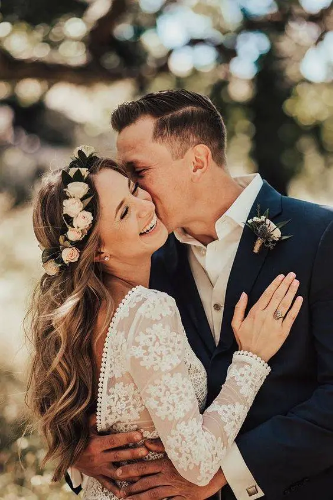

Buying an engagement ring is much more than a simple purchase: it is a concrete symbol of your love and your mutual commitment. For many couples, it is one of the most important choices in preparing for the wedding, a decision that deserves thought and attention.
Marriage is a major milestone in every couple's life, and choosing the engagement ring is one of its most important elements. Beyond its material aspect, the ring symbolises a lifelong commitment and eternal love between you and your partner. From the style to the choice of metal and the characteristics of the diamonds, every detail counts in making this ring a perfect symbol of your love and commitment. This complete guide will give you the tools you need to make an informed, considered decision.
The union of two souls is a magical, unique moment, marked by the proposal, an instant often full of emotion and tenderness. In the world of weddings, the proposal is much more than a simple question; it is a promise of a shared life and happiness. Whether you choose to propose over an intimate dinner, on a mountain top or somewhere full of memories, the key is to capture the essence of your love and closeness. It is the start of a new adventure, the union of two life paths that come together as one.
The proposal is often the starting point for many exciting preparations. It is a moment when you begin to dream of the big day, imagine the perfect ceremony and plan every detail with care. The wedding rings, eternal symbols of union, are chosen with particular attention, representing the promise of endless love. The wedding dress, the suit, the flowers, the music: everything is carefully selected to make the day unforgettable.
What is the engagement ring?
First of all, the engagement is a tradition that marks the union between two people. As we have all heard, the exchange of engagement rings goes back centuries and has its roots in ancient rituals and symbolic practices.
The ring itself is visible evidence of the commitment made by two people who promise each other fidelity and love for life. Beyond its material value, the engagement ring carries deep meaning in modern relationships.
It marks the start of a journey towards marriage, a mutual commitment to build a future together, overcome challenges and celebrate the joys of life as a couple.


The engagement ring is more than a simple piece of jewellery; it is a symbol full of emotion and deep meaning in Western culture.
Traditionally, it marks the stage before marriage, symbolising a serious commitment and the intention to build a shared future.
Usually set with a diamond or another precious stone, the engagement ring is chosen carefully for its beauty and symbolism. The central diamond is often surrounded by smaller stones or mounted on a precious metal such as white gold, yellow gold, platinum or sometimes silver, according to personal preference and cultural traditions.
Every engagement ring is unique, not only in its design and physical characteristics, but also in the feeling of love and devotion it represents for the couple. It is a tangible symbol of shared love, mutual trust and the promise to support and love each other through every aspect of life.
It embodies the deep commitment of two people ready to unite their destinies and build a future together. Every day, it is a reminder of the beauty of their union and the sincerity of the proposal, and it represents their commitment.
And for you, which ring best embodies a deeply emotional and spiritual commitment?

How do you decide on the style of the ring?
Deciding on the perfect style for your engagement ring is an essential step that marks the union of your two souls and the proposal, a precious, memorable moment. Every ring tells a unique, personal story, symbolising the promise of eternal love and sincere commitment.
What are your partner's preferences?
Before buying an engagement ring, it is essential to understand your future spouse's tastes and preferences. Observe their jewellery habits! Do they prefer gold, silver or platinum? Do they go for classic, modern or vintage designs? A discreet survey of their close friends or family can give you valuable clues about what they like and what suits them best…

Choosing a timeless design
Combining your personal tastes with current trends can also influence your choice. Although jewellery trends evolve, an engagement ring is meant to be worn for life. So opt for a timeless design that will stand the test of time without losing its elegance. Solitaires, pavé diamond rings and halo rings are classic choices that continue to captivate with their beauty and elegance. A timeless design ensures the ring will remain a symbol of your love for decades to come.
The proposal is the perfect opportunity to personalise your ring. Think about engraving a special message inside the band or choosing a stone with particular meaning for you both. Bespoke rings, created with a jeweller, let you incorporate unique, symbolic elements, making your ring a true reflection of your love story.
I would advise you to be careful with styles that are too unusual, since a wedding band will later be worn alongside it and the two will need to match.
Understanding the 4 Cs of diamonds: carat, clarity, colour and cut
Carat
A diamond's carat refers to its weight, which directly affects its size and cost. It is crucial to strike a balance between the size of the diamond and its overall quality, according to your budget. A larger diamond isn't always the best choice if its quality compromises brilliance and purity.

Clarity

A diamond's clarity measures the presence of inclusions or imperfections visible to the naked eye. High-clarity diamonds are rarer and more expensive, but diamonds with minor inclusions can offer equivalent beauty at a lower cost. The important thing is to choose a diamond whose inclusions don't significantly affect its beauty.
Colour
Diamonds are graded on a colour scale from D (colourless) to Z (tinted yellow or brown). Colourless diamonds (D–F) are the most prized for their purity and brilliance. However, diamonds with a slight tint (G–J) can also be very beautiful while being more affordable.

Cut

A diamond's cut refers not only to its physical shape, but also to the way it is cut to maximise its brilliance and the dispersion of light. A well-executed cut can turn a diamond of average quality into a sparkling, attractive stone.
Which metal should you choose for the band?
The choice of metal for the engagement ring determines not only its look, but also its durability and long-term care.
White, yellow or rose gold:
White gold offers a modern, elegant look, perfect for those who appreciate simplicity and sophistication. Yellow gold, classic and warm, evokes timeless tradition. Rose gold, romantic and on-trend, is ideal for those looking for a touch of modernity in their choice of ring.

Platinum:
Platinum is a precious metal known for its exceptional durability and scratch resistance. Although more expensive than gold, platinum is hypoallergenic, making it an ideal option for those with sensitive skin who want a long-lasting, low-maintenance ring.

Silver:
Less expensive than gold and platinum, silver is an affordable alternative for an engagement ring. However, it needs regular care to prevent tarnishing and keep its shine over time.

How do you set a realistic budget?
Estimating the cost
Before starting your search, set a realistic budget for buying the engagement ring. It is important to consider not only the cost of the ring itself, but also other expenses such as diamond certification fees and any adjustments or repairs that may be needed.
Financing options
Many jewellers offer financing options that can make buying the engagement ring easier while respecting your budget. Ask about instalment plans, interest-free credit or other arrangements that might suit your specific financial situation. There are also wedding ring fairs in major cities such as Bordeaux, where special offers can make purchases very attractive.
Prioritising your criteria
Depending on your budget, you may need to compromise on certain aspects of the ring, such as the size of the diamond or the metal of the band. Talk with your partner about which criteria matter most to them, to find a satisfying balance between quality and cost.
Why buy from a trusted seller?
Researching the jeweller and their reputation
The union of two people is a unique, precious moment, and the engagement ring should reflect that beauty and depth. A trusted seller will guide you through this important choice, offering sound advice and invaluable expertise. Take the time to research reputable, trustworthy jewellers before finalising your purchase. Read online reviews, ask friends and family for recommendations, and make sure the jeweller you choose has a good reputation for product quality and customer service. Joining two lives is a serious, lasting commitment, and the quality of the engagement ring should be too. By choosing a trusted seller, you invest in a piece that not only symbolises your proposal, but will last through the years, just like your love. A good seller also offers impeccable after-sales service, ensuring your ring stays as beautiful as on the day of your proposal. For example, Zeina is a boutique specialising in wedding rings in the heart of Bordeaux. Renowned for its expertise and craftsmanship, Zeina offers a wide range of rings, from classic styles to bespoke creations. Each piece is carefully selected for its exceptional quality and refined design. The Zeina team, made up of passionate professionals, is dedicated to helping each couple choose the perfect ring, the one that will symbolise their love and lifelong commitment. With personalised service and close attention to detail, Zeina stands out as the essential reference for those seeking excellence and elegance in Bordeaux.



Diamond certification
Make sure the diamond in your engagement ring comes with a certificate issued by a reputable gemmological laboratory such as the GIA (Gemological Institute of America). Certification guarantees the authenticity and quality of the diamond, giving you peace of mind when you buy. Are you familiar with this kind of certificate?


Returns policy and warranty
Ask about the jeweller's returns policy and the warranties offered on the engagement ring. A flexible returns policy will let you exchange the ring if necessary, while a warranty covering defects and damage will protect your investment in the long term. It is important to be able to ask these kinds of questions.
In conclusion, choosing an engagement ring is an act full of emotion and symbolism, marking the start of a new chapter in your relationship. By following these detailed tips, you will be better prepared to find the perfect ring to reflect the love and commitment you share. Take the time to understand your partner's preferences, assess the characteristics of the diamonds, select the ideal metal, manage your budget carefully and buy from a trusted jeweller. That way, you will create an unforgettable, precious memory that marks the start of your journey towards marriage. Do you have a clearer idea now?